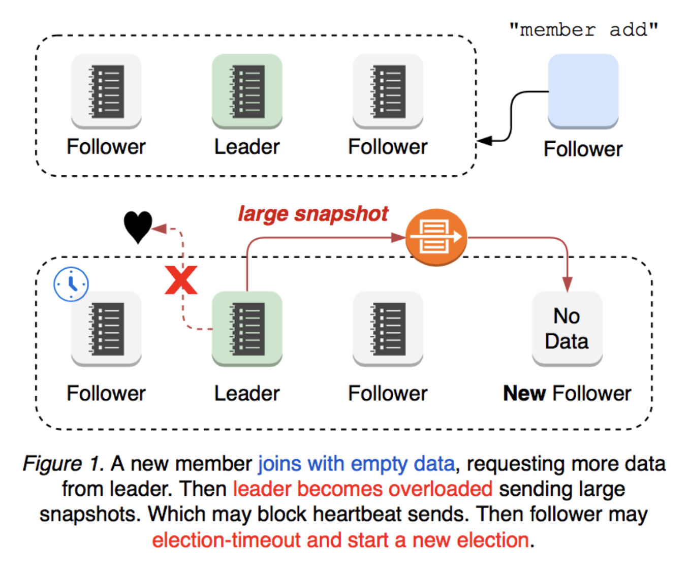
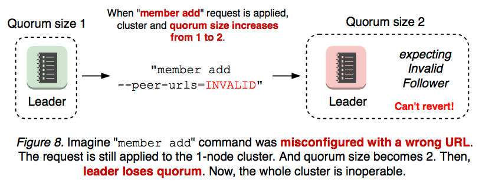
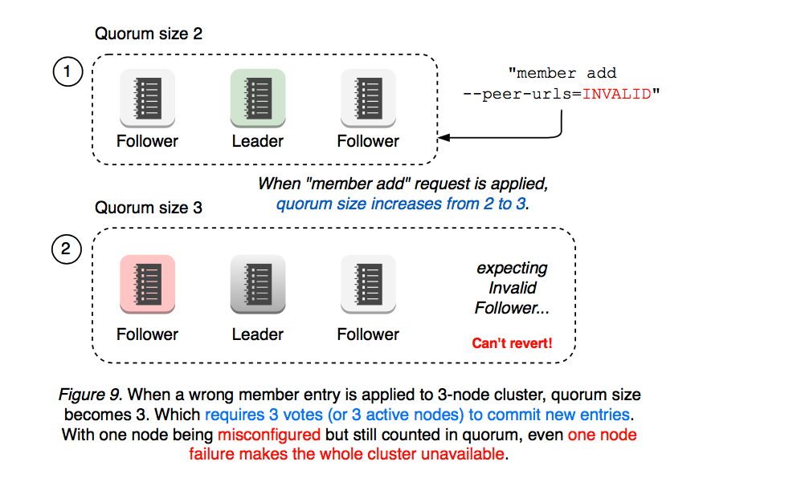

Raft
1 Introduction
共识算法允许机器集合作为一个连贯的群体工作，即使其中一些成员出现故障也能继续工作。因为这一点，它们在构建可靠的大规模软件系统中扮演者关键角色。Paxos 在过去的十年中主导了共识算法的讨论，不幸的是，Paxos 相当难以理解，尽管有很多使其更易接受的尝试。另外，其架构需要复杂的修改以支持实用的系统。其结果是，系统构建者和学生都很受 Paxos 困扰。
因此，我们以可理解性为主要目标，设计了一套新的共识算法，即：Raft。Raft 与现有的共识算法在很多方面都很相似，但 Raft 有很多新特性：
-
强 leader： 与其它共识算法相比，Raft 使用了更强的领导权形式。例如，日志条目(log entry)仅从 leader 流向其它服务器。这简化了对多副本日志的管理，并使 Raft 更容易理解。
-
领导选举： Raft 使用随机计时器来选举 leader。这仅在任何共识算法都需要的心跳机制上增加了很小的机制，但能够简单又快速地解决冲突。
-
成员变更： Raft 用来变更集群中服务器集合的机制使用了一个新的联合共识（joint consensus）方法，其两个不同配置中的大多数服务器会在切换间有重叠。这让集群能够在配置变更时正常地继续操作。
我们认为，无论为了教育目的还是作为实现的基础，Raft 都比 Paxos 和其它共识算法更优秀；Raft 的描述足够完整，能够满足使用系统的需求；Raft 有很多开源实现并已经被一些公司使用；Raft 的安全性性质已经被形式化定义并证明；Raft 的效率与其它算法相似。
2 Replicated state machines
共识算法通常在多副本状态机问题（replicated state machine problem）的上下文中出现。通过这种方法，在一系列服务器上的状态机会计算相同状态的相同副本，且即使在一些服务器宕机是也可以继续操作。多副本状态机被用来解决分布式系统中各式各样的容错问题。例如，有只有一个 leader 的大型系统（如 GFS、HDFS、和 RAMCloud）通常使用独立的多副本状态机来管理领导选举并存储必须能在 leader 崩溃时幸存的配置信息。多副本状态机的例子还包括 Chubby 和 ZooKeeper。
多副本状态机通常使用多副本日志实现，如 Figure 所示。每个服务器存储一个包含一系列指令的日志，状态机会按照顺序执行日志。每个日志包含相同顺序的相同指令，因此每个状态机会处理相同的指令序列。因为状态机是确定的，每个状态机都会计算出相同的状态并得出相同的输出序列。
保持多副本日志的一致性是共识算法的任务。服务器上的共识模块会接收来自客户端的指令，并将其添加到它的日志中。它与其它服务器上的共识模块通信来确保每个日志最终包含相同顺序的相同请求，即使一些服务器故障也是如此。一旦指令被恰当地多副本化，每个服务器的状态机就可以按日志顺序处理它们，并将输出返回给客户端。这样，所有服务器对外会表现为单个高可靠性的状态机。
为实用系统设计的共识算法通常有如下属性：
-
它们确保所有非拜占庭条件下的安全性（永远不会返回错误结果），需要处理的问题包括网络延迟、分区、丢包、重复、和乱序。
-
只要大多数服务器可以操作那么其所有功能都可用，且能够互相通信或与客户端通信。因此，通常使用的由 5 个服务器组成的集群能够容忍任意 2 个服务器故障。服务器被假设可能宕机停止；它们也可能在随后从稳定存储中恢复并重新加入集群。
-
它们不依赖定时来保证日志的一致性：但在最坏的情况下，时钟故障和极端的消息延迟会导致可用性问题。
-
在通常情况下，一条指令能在集群的大多数响应一轮 RPC 后完成；少数的较慢的服务器不会影响整个系统的性能。
3 What’s wrong with Paxos?
在过去十年中，Leslie Lamport 的 Paxos 协议几乎和共识成了同义词：Paxos 是在课程中最常被教授的协议，也是大多数共识实现的起点。Poxos 首先定义了一个能够对单个决策达成一致的协议。
不幸的是，Paxos 有两个显著的劣势。第一个劣势是 Paxos 非常难以理解。众所周知，Paxos 的完整解释非常隐晦；只有很少的人在付出很大努力后才能成功理解它。在对 NSDI2012 出席者的非正式调查中，我们发现尽管在经验丰富的研究者中，也几乎没有人觉得 Paxos 容易。我们自己就受 Paxos 困扰，直到阅读了一些简化的解释后我们才理解了完整的协议，所以我们设计了自己的替代的协议，这一过程花了差不多一年时间。
Paxos 的第二个问题是它没有为构建实用的实现提供良好的基础。其原因之一是人们对 multi-Paxos 算法没有广泛的一致意见。Lamport 的描述几乎都关于单决策 Paxos；他概括了 multi-Paxos 的可能的方法，但缺少许多细节。像 Chubby 这样的系统实现了类 Paxos 算法，但在大多数条件下的细节都没有发表。
4 Designing for understandability
我们在设计 Raft 时有许多目标：它必须为系统构建提供完整且实用的基础，这样就能大量减少开发者所需的设计工作；它必须在所有条件下都安全，在典型的操作条件下可用；它必须能在通用操作中保持高效。但我们最重要的目标是可理解性，这也是最难的挑战。
5 The Raft consensus algorithm
Raft 是一种用来管理 Section 2 中描述的形式的多副本日志的算法。Figure 2 以浓缩的形式总结了算法以供参考，Figure 3 列出算法的关键性质；这些图中元素将在本章剩下的部分分条讨论。
Raft 通过先选举一个 leader 然后给予该 leader 管理分布式日志的所有责任的方式实现共识。该 leader 接收来自客户端的日志条目，将它们复制到其它服务器上，然后告诉服务器什么时候可以安全地将这些日志条目应用到它们的状态机中。使用 leader 可以简化对分布式日志的管理。
基于 leader 的思路，Raft 将共识问题分成三个独立的子问题，这些将在后续子节中详细描述：
-
Leader election:当前 leader 崩溃时，必须有一个新的 leader 被选举出来（Section 5.2）
-
Log replication:leader 从客户端接收 log entry，并且将其复制到集群中，迫使其他日志与自己的日志一致（Section 5.3）
-
Safety:Raft 中关键的安全性是 Figure 3 中的状态机安全性（State Machine Safety Property）：如果任意服务器将一个特定的日志条目应用到了其状态机中，那么不会有应用了具有相同 index（索引）但指令不同的日志条目的服务器。Section 5.4 描述了 Raft 如何确保这一性质；其解决方案包括对 Section 5.2 中描述的选举机制的一个额外的约束。
5.1 Raft basics
一个 Raft 集群由多个 Server 组成，通常是 5 个，这样的系统可以容忍两个 Server 崩溃。在任何时间，每个 Server 只能是以下三种状态之一：leader, follower, or candidate。正常运行时，一个集群只有一个 leader，其他 Server 都是 follower。 follower 不会主动提出任何请求，只是被动响应 leader。leader 会处理所有客户端请求（如果 follower 收到客户端请求会将其重定向到 leader）。candidate 状态是为了选举一个新的 leader，会在 5.2 节介绍。状态间的转换如下图：

Raft 将时间划分长度不定的任期，如下图：任期使用连续的整数来编号。
每个任期由选举开始，其中一个或更多的 candidate 试图成为 leader，5.2 节介绍。在某些情况下，选举会出现票数相等的情况，这种情况任期会直接结束，新的任期很快会重新开始（通过一次新的选举）。Raft 保证一个任期内最多有一个 leader。
不同的服务器可能会在不同的时间观察到任期的转换，在一些情况下一个节点甚至可能错过整个任期，任期作为 Raft 的逻辑时钟，可以帮助 Server 检测旧信息以及过时的 leader。每个 Server 内都会维护一个单调递增的 current term 字段，在 Server 间的所有通信都会带有该字段。
Raft 节点间使用 RPC 进行通信，最基本的 Raft 共识算法只需要两种 RPC：
-
RequestVote：该调用会在选举期间被 candidates 调用，用途是拉票；
-
AppendEntries：该调用会在正常运行期间被 leader 调用，用途是复制 log 以及实现心跳机制。
在第 7 节中引入了第三种 RPC 调用，用于在 Server 间传递快照。当请求失败时 Server 会及时重试，并且为了性能，请求都是并行进行的。
5.2 Leader election
Raft 通过心跳机制来触发选举。当集群启动时，所有 Server 都是 follower，Server 会维持 follower 状态，如果一段时间（election timeout）内没收到来自 leader 的心跳，它就假设 leader 已经不可达来，然后开启一个新的选举去选择一个新的 leader。leader 会周期的向每个 follower 发送心跳（空 log entries 的 AppendEntries 调用），来维护自身的权威。
开始选举时，follower 会自增其 current term 字段，然后将其状态改变为 candidate。然后并行的向集群中的其他节点发起 RequestVote 调用，candidate 会一直持续到出现下面三种情况之一：
-
它赢得了选举：如果候选者在同一任期内获得整个集群中大多数服务器的投票，则该候选者将赢得选举。每个服务器在给定任期内最多为一名候选人投票，先到先得（第 5.4 节增加了对投票的额外限制）。多数票规则确保在某一任期内最多只有一名候选人能够赢得选举。一旦某个候选者赢得选举，它就会成为领导者。然后，它就会向所有其他服务器发送心跳信息，以确立自己的权威，防止出现新的选举。
-
其他节点成为了 leader：在等待选票时，candidate 可能会收到来自 leader 的 AppendEntries 调用，如果该 leader 的任期号大于等于的 candidate 的任期，candidate 就会意识到已经有人是 leader 了，他会变回 follower 状态；否则它会拒绝该请求，然后继续保持 candidate 状态。
-
一段时间过去但没有 leader 出现：当同时有多个 follower 变为 candidate，就会导致选票分散，最终谁都不能得到大多数都选票，当这种情况发生时，每个候选人都会超时，并通过增加任期和启动新一轮请求投票 RPC 开始新的选举。但仅仅重试，可能会一直重复上述情况。
Raft 采用随机选举超时机制来解决。为了从一开始就防止分裂投票，election timeout 就是从一个固定间隔（例如 150-300ms）中随机选择的。这样可以分散服务器，在大多数情况下只有一台服务器会超时；它会赢得选举，并在其他服务器超时前发送心跳。同样的机制也用于处理分票。每个候选人在选举开始时重新启动其随机选举超时，等待超时结束后再开始下一次选举；这就降低了在新一轮选举中再次出现分裂投票的可能性。第 9.3 节表明，这种方法能迅速选出领导者。
5.3 Log replication
一旦 leader 被选举出来，它就开始处理客户端的请求。每个客户请求都包含复制状态机要执行的命令，领导者将命令作为新条目添加到日志中，然后并行向其他每台服务器发送 AppendEntries RPC，以复制该条目。当条目被安全复制后（如下所述），领导者会将条目应用到其状态机中，并将执行结果返回给客户端。果 follower 崩溃或运行缓慢，或者如果网络包丢失，leader 会无限重试 AppendEntries RPC（即使它已经响应了客户端），直到所有的 follower 最终存储了所有的日志条目。
log 的组织形式如下图所示，每个 log entry 都存储着状态及命令已经被 leader 接收时的任期编号，每个日志条目还有一个标识它在日志中的位置的整数 index（索引）：
leader 会决定什么时候能够安全地将日志条目应用到状态机，这种条目被称为 committed（已提交）的。Raft 保证 committed 的条目时持久性的，且最终将会被所有可用的状态机执行。一旦撞见了日志条目的 leader 将其如知道了大多数服务器上，那么该条目会变成 committed 的（e.g. entry 7 in Figure 6）。这也会提交领导者日志中之前的所有条目，包括前任领导者创建的条目。第 5.4 节会讨论这块的细节，同时也说明了这一承诺定义是安全的。
领导者会维护它所知道的已提交的最高索引，并在未来的 AppendEntries RPC（包括心跳）中包含该索引，以便其他服务器最终发现，如果追随者得知日志条目已提交，它就会将该条目应用到其本地状态机（按日志顺序排列）。
我们设计了 Raft 日志机制，以保持不同服务器上的日志之间的高度一致性。Raft 维护以下适当关系，这些关系共同构成日志匹配属性：
-
如果不同日志中的两个条目具有相同的索引和任期，则它们存储的是相同的命令。该属性表明：对于给定的日志索引和给定的任期 leader 只会创建一个 log entry，并且 log entry 不会改变其位置。
-
如果不同日志中的两个条目具有相同的索引和任期，则日志中所有前面的条目都是相同的。该属性通过 AppendEntries 调用执行的一致性检查保证，当 leader 发送一个 AppendEntries RPC 调用时，会带着新 entry 当前一个 log entry 的索引和任期。如果 follower 没有对应的 log entry 或者前一个 log entry 的任期或索引不正确，就会拒绝追加日志的请求。
正常的操作，leader 和 follower 将会一直保持一致，leader 的崩溃可能会导致日志的不一致（旧的 leader 可能没有完全复制其日志中的所有条目），这些不一致可能会在很多 leader 和 follower 的崩溃后加剧，Figure 7 中展示了可能出现的情况，follower 可能缺少 leader 中的 log entry，也可能有 leader 中没有的 log entry，也可能两种都有：
在 Raft 中，leader 会覆盖 follower 中的一些 log entry，来强制复制。第 5.4 节将详细说明，如果再加上一个限制条件，这种方法是安全的。
为了使 follower 与 leader 一致，leader 需要找到二者日志中最后一个相同的 log entry，从该日志之后开始，将 leader 中的日志依次发给 follower。以上过程都是在 AppendEntries 一致性检查时进行的。leader 会为每个 follower 维护一个 nextIndex ，表示下一个要发给该 follower 的 log entry 索引。当 leader 刚任职时，所有的 nextIndex 会被初始化为它当前的日志索引的下一个索引（在 Figure 7 是 11），当 AppendEntries 调用失败时，leader 会递减对应的 nextIndex，然后重试 AppendEntries，最终 nextIndex 的值将会正确指向 follower 下一个需要的日志索引。
optimization
论文中提出的一种优化是：当 AppendEntries 失败时，follower 返回冲突的日志所在的任期号，以及该 follower 存储的对应任期的第一个 log entry 索引，这样 leader 可以直接跳过这些 log entry，来减少 AppendEntries 的失败调用次数。
但是论文中认为该优化可能不太必要，因为实际生产环境中崩溃没那么频繁，而且不一致的 log entry 也没那么多。
leader 永远不会删除或覆盖它自己的 log entry（对应 Figure 3 的 Leader Append-Only Property）。
这种日志复制机制体现了 Section 2 描述的理想的共识性质：只要大多数服务器在线，Raft 就可以接受、复制、并应用新日志条目；在正常情况下新日志条目只需要一轮 RPC 就可以被复制到集群中大多数节点上；单个缓慢的 follower 不会影响性能。
5.4 Safety
先前章节描述了 Raft 的选举和日志复制机制，然而这些机制还不能确保每个状态机都以相同的顺序执行命令。例如，follower 可能在 leader 提交一些日志条目时不可用，然后它可能被选举为 leader 并讲这些条目覆盖为新的条目；这样，不同的状态机可能执行不同的指令序列。
本章通过添加可以被选举为 leader 的 Server 的限制来完善了 Raft 算法，这一约束确保了任何被选举成为 leader 的 Server 包含当前任期之前所有已经被提交 log entry（Figure 3 的 Leader Completeness Property）。通过选举约束，我们可以让提交的规则更加精确。最后，我们给出了 Leader Completeness Property 的简要证明，并展示了它如何让多副本状态机的行为正确。
5.4.1 Election restriction
在任何基于 leader 的共识算法中，leader 最终都要包含所有已经提交的 log entry，在一些共识算法中，如：Viewstamped replication revisited，即使一个服务器最初没有还包含所有已提交的日志条目，它也可以被选举为 leader。这些算法有额外的机制来识别确实的日志条目，并在选举时或选举完成后的很短的时间里，将它们传输给新的 leader。不幸的是，这需要引入相当多的额外的机制，大大增加了复杂性。
Raft 使用了一种更简单的方法，只有拥有最新 log entry 的 candidate 才能被选举为 leader，拥有更新的任期号的 log entry 更新，如果任期号相同，那么索引越大的越新，因为只有获得大多数投票才能当选，且一个被认定为被提交的 log entry 是已经被赋值到大多数节点上了，所以可以当选的 candidate 一定是拥有最新已经被提交的 log entry 的节点。这也意味着 log entry 仅单向流动：从 leader 到 follower，且 leader 永远不会覆写它的日志中已存在的条目。
5.4.2 Committing entries from previous terms
如第 5.3 节所述，leader 知道，一旦当前任期内的一个 log entry 存储在大多数服务器上，该 entry 就是已提交的。如果领导者在提交条目前崩溃，未来的领导者将尝试完成条目的复制。然而新的 leader 不能通过副本数来提交上一个任期中的 log entry，Figure 8 说明了这样一种情况：

情况 C 中当重新当选的 S1 将任期 2 的日志复制到大多数的节点中，如果此时 S1 将它提交，但是在通知其他 follower 前崩溃了，那么 S5 就有机会当选，当 S5 当选后，就会把 任期 3 的日志重新赋值并提交，导致 S1 中已经提交的任期 2 中的日志被覆盖。所以一个新的 leader 是不能通过日志的副本数来提交上一个任期内的日志。
为了解决这个问题，Raft 只运行 leader 提交当前任期内已经复制到大多数机器上的日志，因为有 Log Matching Property，所以上一个任期中的日志会顺带被提交，之前任期中的日志新 leader 只能拷贝，不能提交。
5.4.3 Safety argument
这部分是 Raft 的安全性证明，可以参考原文。
5.5 Follower and candidate crashes
目前我们都专注于 leader 故障的情况。处理 follwer 和 candidate 崩溃比处理 leader 崩溃简单得多，且这二者的故障可以用相同的方式处理。如果一个 follower 或 candidate 故障，那么之后发送到它的 RequestVote 和 AppendEntries RPC 会失败。Raft 通过无限重试来处理这些故障；如果崩溃的服务器重启，那么 RPC 将会成功完成。如果服务器在完成 RPC 后但在响应前故障，那么在它重启后会收到相同的 RPC。Raft 的 RPC 是幂等的，所以这不会造成影响。例如，如果一个 follower 收到了一个包含了已经在它日志中的条目的 AppendEntries，它会忽略新请求中的那些条目。
5.6 Timing and availability
我们对 Raft 的要求之一是安全性决不能依赖定时：系统绝不能因某个时间发生的比预期的更快或更慢而产生错误的结果。但可用性（系统能够及时响应客户端的能力）不得不依赖与时间，例如，如果崩溃服务器间的消息交换消耗了比通常更长的时间，candidate 将不会保持足够的时间以赢得选举。没有稳定的 leader，Raft 就不能处理任何请求。
所以尽管 Raft 对于事件发生的先后没有要求，但是对于一些事件的事件消耗有一定的限制：
\(broadcatTime\) 是广播时间，即服务器将 RPC 并行地发送给集群中的每个服务器并收到它们的响应的平均时间，\(electionTimeout\) 是 5.2 节中描述的选举超时时间，\(MTBF\) 是故障发生的平均时间。
\(broadcastTime\) 应该比 \(electionTimeout\) 小一个数量级，这样 leader 可以可靠的发送心跳消息以阻止选举发生；因为 \(exectionTimeout\) 采用了随机方法，这一不等性也让投票决裂不太可能发生。\(electionTimeout\) 应该比 \(MTBF\) 小几个数量级，这样系统能够取得稳定的进展。当 leader 崩溃时，系统将会在大概 \(electionTime\) 的时间内不可用，我们想让这一时间仅占总时间的很小的比例。
6 Cluster membership changes
到目前为止，我们都假设集群配置（configuration）（参与共识算法的服务器集合）是固定的。在实践中，偶尔变更配置是必要的，例如当服务器故障时替换它们，或修改副本数。尽管这可以通过该将整个集群下线、更新配置文件并重启集群来实现，但是这会让集群在变更期间不可用。另外，任何人工参与的步骤都有操作错误的风险。为了避免这些问题，我们决定将配置变更自动化，并将它整合到 Raft 共识算法中。
为了使配置变更机制是安全的，在切换期间决不能有同时出现两个被选举出的 leader 的情况。不幸的是，任何让服务器直接从就配置转换到新配置的方法都是不安全的。立刻对所有服务器进行切换是不可能的，因此集群在切换中可能被分为两个相互独立的“大多数”（如 Figure 10）。
为了确保安全，配置变更必须使用两阶段的方法。在 Raft 中，集群首先会切换到过渡配置，我们称之为联合共识（joint consensus）；一旦联合共识被提交，接着系统会切换到新配置。联合共识结合了旧配置和新配置：
-
日志条目会被复制到两个配置的所有服务器上。
-
任一个配置的任何服务器都可能成为 leader。
-
共识（用来选举和日志条目提交）需要在旧配置和新配置中的大多数分别达成。
联合共识让每个服务器能在不同时间切换配置而不需要做出安全性妥协。另外，联合共识让集群能够在配置变更时继续为客户端请求提供服务。
集群配置的存储和通信使用了多副本日志中的特殊条目。Figure 11 阐释了配置变更的过程。

leader 收到配置变更的请求后，会将配置切换为 \(C_{old,new}\)，这意味着 leader 会使用 \(C_{old,new}\) 的规则来决定什么时候 \(C_{old,new}\) 的日志条目被提交。如果 leader 崩溃，新的 leader 可能在 \(C_{old}\) 或 \(C_{old,new}\) 下被选举出，这取决于赢得选举的candidate有没有收到 \(C_{old,new}\) 。这期间的任何情况下， \(C_{new}\) 都不能单独做决策。
一旦 \(C_{old,new}\) 被提交，所有日志的提交请求都要经过 \(C_{old}\) 和 \(C_{new}\) 两个集群配置的大多数同意，领导完整性特性保证了只有复制了 \(C_{old,new}\) 的节点才能被选举为 leader。\(C_{old,new}\) 被提交之后，leader 会创建 \(C_{new}\) 的条目，然后切换到 \(C_{new}\)，当 \(C_{new}\) 被提交后，旧配置就不重要了，不在新集群的节点就可以关闭了。
7 Log compaction
Raft 的日志会随着正常的操作增长，以合并更多的客户端请求。但是在实用系统中，它不能不受限地增长。随着日志越来越长，它会占用越来越的的空间，并需要更长的时间来重放。最终，如果没有机制来丢弃日志中积累的过时的信息，这会导致可用性问题。
快照策略是最简单的压缩方式。在快照策略中，当前的整个系统状态会被写入到稳定存储上的一个快照中，然后直到这一点的所有日志条目会被丢弃。快照策略被使用在 Chubby 和 Zookeeper 中，本章其余部分会描述 Raft 中的快照策略。
也可以采用增量方法进行压缩，如日志清理和 LSM。它们一次只对部分数据进行处理，因此能在一段时间内更均匀地分散压缩负荷。它们首先选择一个数据区域，该区域已累积了许多被删除和覆盖的对象，然后它们会更有效地重写该区域的实时对象，并释放该区域。与快照相比，这需要大量额外的机制和复杂性，而快照通过始终在整个数据集上运行来简化问题。Figure 12 展示了快照在 Raft 中的基本思路：

每个 Server 独立的处理快照，覆盖它已经提交的日志。大部分工作包括将状态机的当前状态写入快照。Raft 还在快照中包含了少量元数据：快照替换时最后一个被提交的日志的索引以及任期号，这个数据是为了配合 AppendEntries 的一致性检查。为了支持成员变更，快照还要包括创建快照时的集群配置。服务器写完快照后，可能会删除直到最后一个包含的索引为止的所有日志条目，以及之前的快照。
虽然服务器通常会独立拍摄快照，但 leader 必须偶尔向落后的 follower 发送快照。当领导者已经丢弃了需要发送给跟随者的下一个日志条目时，就会出现这种情况。正常运行的集群不会出现这种情况，但是，落后特别多的 follower 或加入群集的新服务器（第 6 节）就会出现这样的情况。
leader 使用名为 InstallSnapshot 的新 RPC 向落后太多的 follower 发送快照；见 Figure 13。

通常，快照会包含在接收者的日志中还没有的新信息。在这种情况下，follower 会丢弃它全部日志，因为这些日志都可以被快照取代，且日志中可能含有与快照冲突的未提交的日志条目。相反，如果 follower 收到的快照描述的是它日志的前缀（由于重传或错误），那么被快照覆盖的日志条目会被删除，但是快照之后的条目仍有效且必须被保留。
followers 可以自己生成快照，这与 Raft 的强 leader 理论相悖，但是这种偏离是合理的，因为生成快照的 log entries 是已经达成共识的，因此不会导致决策冲突，followers 只是重新组织其数据。我们考虑了一种替代的 leader-based 的快照方式，在此方式中，快照只由 leader 生成然后传递给 followers，但这由两种缺点：
-
从 leader 向 followers 发送快照会浪费网络带宽，并且会减慢快照的处理速度。
-
会复杂化 leader 的实现。
还有两个因素会影响快照的速度：
-
servers 必须觉得何时进行 snapshot。如果太频繁，会浪费磁盘带宽；太不频繁，有可能耗尽其存储能力。一种简单的策略是在日志达到以字节为单位的固定大小时进行快照。如果设定的大小远大于快照的预期大小，那么快照所需的磁盘带宽就会很小。
-
第二个性能问题是，写快照可能需要大量时间，我们不希望因此耽误正常运行。解决方法是使用 copy-on-write，这样就能在不影响写入快照的情况下接受新的更新。可以使用操作系统的写入时复制支持（如 Linux 上的 fork）来创建整个状态机的内存快照（我们的实现采用了这种方法）。
8 Client interaction
这节描述客户端如何和 Raft 交互，这包括客户端如何找到 leader 和 Raft 如何支持 linearizable 语义。这些问题适用于所有基于共识的系统，Raft 的解决方案与其他系统类似。
Raft 中只有 leader 可以处理客户端的请求。当客户端初次启动时，它会随机连接一个服务器，如果连接的服务器不是 leader ，该服务器会拒绝连接，并提供最新 leader 的信息（从最近收到的 AppendEntries 中得到其网络地址）。如果 leader 崩溃，客户端请求就会超时；然后，客户端会通过随机选择的服务器重新尝试。
我们对 Raft 的目标是实现线性语义（每个操作看上去是在它的调用和响应期间的某一时刻被瞬时（instantaneously）、至少一次执行（exactly once）的执行）。然而，目前我们描述的 Raft 算法可能多次执行统一指令：例如，如果 leader 在提交日志条目但是没有响应客户端的时候崩溃，客户端会向新的 leader 重试该指令，这导致该指令会被二次执行。其解决方案是，让客户端为每个指令分配一个唯一的序列号。然后，状态机会记录每个客户端执行过的最新的序列号和相应的响应。如果它收到的请求的序列号已经被执行过，那么它不会执行请求，并立即发出响应。
只读操作不需要写任何日志就可以处理，然而如果没有额外的措施，当 leader 已经被一个更新的 leader 取代且它还不自知时，就会有返回陈旧数据的风险，而 linearizable 是不允许返回陈旧数据。Raft 需要两个额外的措施来避免该问题：
-
leader 必须知道哪些日志已经提交的最新信息， Leader Completeness Property 确保了 leader 有所有已提交的条目，但在任期开始时，它可能不知道哪些条目是被提交了的，为了得知哪些 log 已被提交，它必须提交一个来自于它的任期的 log，Raft 通过让每个 leader 在它的 term 开始时向日志提交一个空的 no-op 条目的方式处理这一问题。
-
leader 必须在处理只读请求前检查其自身领导地位（如果有更新的 leader 被选举出来，之前的 leader 的数据可能是陈旧的），Raft 通过让 leader 在响应只读请求前与集群的大多数节点交换心跳消息来解决这一问题。
9 Optimize
9.1 PreVote
当某个节点网络情况很差时，它进度很慢，而且总是收不到 leader 的心跳，这会导致它总是选举超时，然后将自己的 term 加一，然后向其他节点发送 RequestVote 的请求，所以其他节点收到这个 term 大但是日志落后的 RequestVote 就会结束当前任期重新选举 leader，这就导致整个集群的稳定性很差，所以就需要一个额外的机制来解决这个问题。
也就是 PreVote，在一个节点想要发起一次正式的 RequestVote 前，首先要确认自己是否能获得集群中大多数节点的投票，也就是向每个节点发送一个 PreVote 请求，这期间该节点不会将 term 加一，也不会更新自己的状态，这样做的目的是一旦集群中有人发起了正式的选举流程，PreVote 不会阻塞正式选举，其他节点在响应 PreVote 消息时，不会更新自身的投票状态。
9.2 Learner
在集群成员变更时，也会一定程度上影响集群稳定性：
- 一个什么数据都没有的节点加入集群，它会向 leader 请求大量的数据，leader 的网络就更有可能超载，甚至阻塞对其他节点的心跳，从而触发 leader 选举；

- 还有当你在添加新节点时，填写了错误的 URL。对于一个单节点集群，这会导致 etcd 完全不可用：

对于多节点集群，如果出现配置错误的节点，也会大大影响 etcd 集群的容错能力：

此时只要有一个节点崩溃，那么整个集群就都不可用了
解决办法就是在添加新节点时，它先不参与投票，也就不会影响原集群配置下的可用性，只有当新节点的数据与 leader 一致后，这个节点才会成为有投票权的节点，这样没有投票权的节点就是 learner。
9.3 Witness
在一些资源受限的场景中，需要降低集群的成本，但又不想牺牲可用性的情况，或者需要实现夸可用区部署节点时，就可以通过 Witness 来降低存储和网络成本。
Witness 是一种特殊的成员类型，它有投票和选举权以及部分的日志，但是不存储完整的数据。它增加了投票节点数，让集群更容易在部分节点宕机的情况下依然满足多数派 (quorum)，从而还能 选主、提交日志、对外提供服务，而不需要为此付出复制一整份数据的代价。
Witness 核心思想就是：通过轻量仲裁节点提高 quorum 可用性而不增加副本负担。
9.4 SetPeer
Raft 只能在多数节点存活的情况下才可以正常工作，在实际环境中可能会存在多数节点故障只存活一个节点的情况，这个时候需要提供服务并修复数据。因为已经不能达到多数，不能写入数据，也不能做正常的节点变更。Raft库需要提供一个SetPeer的接口，设置每个节点的复制组节点列表，便于故障恢复。
9.5 MultiRaft
10 Conclusion
论文后续为测试（对可理解性、性能、正确性等的测试）相关内容。这里简单概括一下：
-
相比 Paxos，Raft 更易理解（废话）...
-
没读懂。作者说使用 TLA+规范语言为 Raft 编写了 formal specification，大体就是 Section 5 中描述的 Raft 性质都是证明可以被保证的。
-
提到了 Raft 的一些优化策略：分批（batching）和流水线处理（pipelining）请求。并且测试了选举算法的性能：
这是在 5 个节点的集群中的测试结果，通过不断让 leader 崩溃，来测量选举出新 leader 的时间。这里的 electionTimeout 可以做个参考，作者建议使用 150-300 毫秒；这样的超时不太可能导致不必要的领导者变更，而且仍能提供良好的可用性。